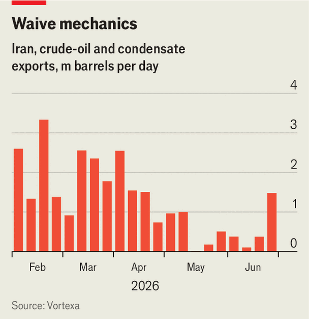

Waiving sanctions on Iranian oil is a huge concession by America
It will enrich an adversary
June 25th 2026

IRAN’S FOOTBALLERS are having an unexpectedly good World Cup. On June 21st they held Belgium, ranked ninth in the world, to a draw in Los Angeles, leaving them within reach of the knockout stages. Over in Switzerland, Iranian diplomats are scoring even bigger successes. On June 22nd the Treasury Department up-ended four decades of American policy by issuing a sanctions waiver permitting the production, sale and delivery of Iranian petroleum for 60 days. The move will bring instant relief to the Iranian regime, and it could over time make Iran rich again.
America banned its firms from buying Iranian oil in 1980 in response to the hostage crisis in its embassy in Tehran the previous year. That embargo was supplemented in the early 2010s by “secondary” sanctions exposing other buyers to American penalties. Those were suspended under Barack Obama’s nuclear deal of 2015, then reimposed, in harsher form, when Donald Trump tore up the pact three years later.
The latest waiver goes much further than any previous relief. An earlier one, issued by Mr Trump while war between the countries raged, covered only Iranian oil already loaded on ships. Licences granted to third countries under Mr Obama required them to cut purchases, which drove exports down from 2.5m barrels per day (b/d) in 2011 to 1.5m in 2012. Even Mr Obama’s nuclear deal lifted only secondary sanctions. Mr Trump’s new licence imposes no such constraints. American refiners may now buy Iranian petroleum directly, pay for it in dollars and receive it from blacklisted tankers—rolling back, temporarily, the original embargo from 1980.
Why be so generous when talks have so far yielded no Iranian concessions? One transparent motive is to keep negotiations alive—and the Strait of Hormuz open—despite rising tensions over Israel’s continued attacks in Lebanon. Beyond that, says Michelle Brouhard of Kpler, a data firm, who also advises America’s energy department, the administration hopes the move will push oil prices down, stop China getting cheap Iranian crude and deter Iran from closing the strait. In reality it will make a marginal difference at best.

One reason is that Iranian crude already flowed more freely after America lifted its blockade of Iran’s ports in mid-June. Exports of oil went from nearly nothing in May to 1.5m b/d, notes David Wech of Vortexa, another data firm (see chart). Loadings from Kharg island, Iran’s main export terminal, have risen, too. Iran still has some way to go before it reaches the monthly average of 2m b/d recorded before the war. But the price of Brent crude, the global benchmark, which has barely moved since Mr Trump’s concession was announced, suggests that markets were pricing in a surge in Iranian shipments even before the waiver was announced.
For exports to rise much more, and prices to come down further, Iran must find new buyers for its oil. In recent years nearly all of its barrels have gone to small “teapot” refineries in north-eastern China. They are “quite excited” about the prospect of purchases with less need for costly efforts to conceal them, says Tom Reed of Argus Media, a price-reporting agency. However, the teapots cannot easily increase their purchases; Iranian crude is now priced on a par with Omani and Emirati oil, limiting the incentive to binge.
For other buyers to come forward, their bankers, insurers and compliance officers must first have confidence that they can do business with Iran for longer than 60 days—and that Mr Trump will not suddenly revoke his waiver. They still face European and British sanctions, which remain in place. And they must consider the reputational risk of putting money directly into the Iranian regime’s pocket, says Amrita Sen of Energy Aspects, a consultancy.
These obstacles will put off many potential customers. India, which once bought lots of oil from Iran, might take some. Japan and South Korea—regular buyers as recently as the late 2010s—may start coming back if the current arrangement lasts a few weeks, says Nader Itayim of Argus. Western purchases probably will not revive before a permanent deal is sealed.
As for keeping Hormuz open, the sanctions relief looks unlikely to achieve the clarity America hopes for. Days after Mr Trump signed the preliminary deal with his Iranian counterpart on June 17th, Iran declared the strait closed again. Non-Iranian traffic—which had begun rising after the signing—immediately paused, even as Iranian shipments increased. It now appears to be rising again, but so are tensions between America and Iran. In the longer run fears linger that Iran will seek to impose a toll on Hormuz crossings, which would constrict traffic. On June 22nd it said it would “administer” the waterway and set up a “telephone hotline” to co-ordinate the passage of ships.
In other words, the sanctions waiver so far looks ineffective from America’s perspective. For Iran, it is a boon: it hastens the recovery of exports and, by freeing up space in its nearly full storage, enables curbed production to restart. By reducing friction in logistics and payments, it lets Iran’s oil firms—and the regime—earn a little more on every barrel they sell.
If the licence is renewed indefinitely, as some experts expect, Iran would attract a bigger and more diverse group of buyers. Add in billions of dollars a year in transit fees, the return of unfrozen assets and Mr Trump’s promised $300bn reparation fund, and Iran could become one of the Gulf’s richest states within a decade, without having conceded much on its nuclear programme or its support for troublesome proxies, says a big trader familiar with the region. Mr Trump may face domestic opposition to what would be near-total capitulation. But the odds of such an outcome are steadily rising. ■
For more expert analysis of the biggest stories in economics, finance and markets, sign up to Money Talks, our weekly subscriber-only newsletter.